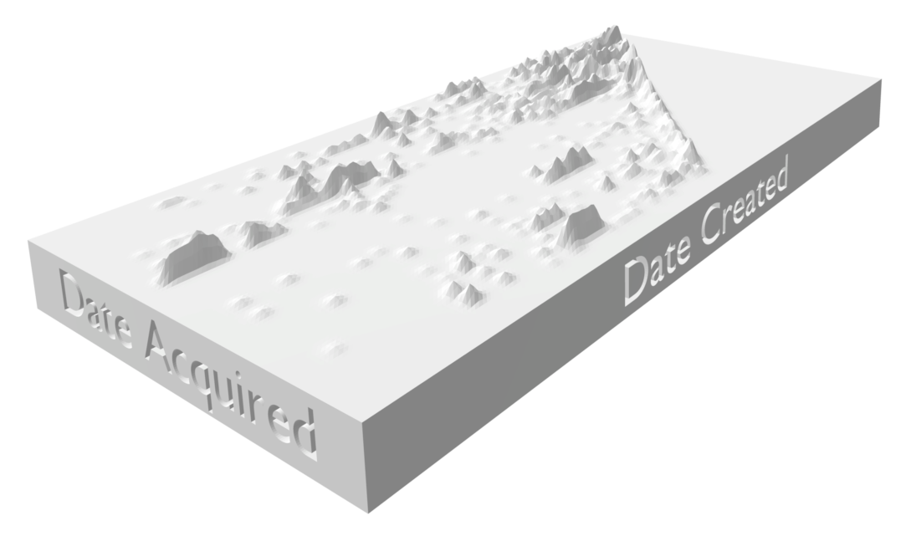

Chaniel and I were most interested in the creation and acquisition date of each piece.
We parsed the Creation Date and Accession Number fields to get the data:
We can visualize the data with a 2d histogram:
By binning manually, we can do more interesting things with the data:
For example, we can slice the data and visualize with a log scale:

We wanted to visualize the data with something physical, so we decided to 3D print the histogram. We first blurred the data because it would have been impossible to 3D print otherwise:

We wrote a function that writes the data into a .obj file:
Adding some text in blender gives us the final model:
